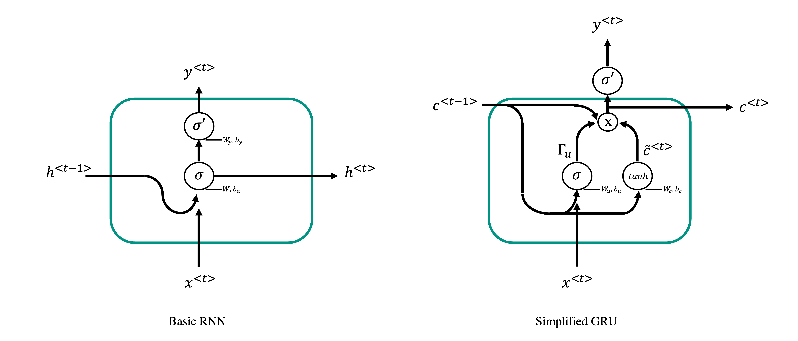

Sequence modelling
In this lecture we will start investigating a family of Neural Network that are particularly suitable for learning tasks that involve sequences as input data.
To understand what a sequence is in the context of Deep learning, let's consider a recording over time (e.g., an audio recording):

Compared to other dataset types (e.g., tabular or gridded data), the different samples of a sequence present an obvious degree of correlation that tends to diminuish the further away to samples are from each other. Moreover, in the case of multi-feature sequences (e.g., multi-component seismological recordings), the overall sequence contains a number of features at each time step that can be more or less correlated to each other.
Sequences appear in every aspect of life. For example, outside of geoscience, the two most commonly used data in sequence modelling are:
- text
- audio
More specifically, as we will see, the field of Natural Language Processing (NPL) has experienced a revolutionary growth in the last decade thanks to sequence modelling and deep learning. In geoscience, many of the commonly used datasets can also be interpreted as sequences, for example:
- seismograms
- well logs
- production data
are all datatypes that present a certain degree of correlation along either the time or depth axis.
Finally, similar to FFNs or CNNs, sequence modelling can be used for various applications:
- Single output classification: given an input sequence of a certain lenght \(\mathbf{x}\), a model is trained to decide whether than sequence contains a feature of interest or not. For example, given a seismogram we may be interest to detect the presence of a seismic event, or we may want to find out if a well log is clean or corrupted by some recording error or what is the facies in the middle of the sequence;
- Multi ouput classification (i.e., semantic segmentation): given an input sequence of a certain lenght \(\mathbf{x}\), a model is trained to classify each element of the input sequence into a predefined set of classes. Taking once again the example of facies labelling, here the task is extended to predicting labels at each depth level (and not only in the middle of the sequence);
- Regression: given an input sequence of a certain lenght \(\mathbf{x}\), a model is trained to predict a continuous output, which could be a single value \(y\) or a sequence of values \(\mathbf{y}\) that has the same (or different lenght) of the input. For example, given a set of well logs we may want to predict another one that was not acquired. Similarly, given a seismic trace recorded by the vertical component of a geophone we may be interested to predict the horizontal components. Both of these example fall under the area of domain translation;
Motivation
Let's start by considering what we have learned so far and discuss how we could use those tools to handle sequential data. First of all, we consider a sequence of \(N_\tau\) samples and \(N_f\) features:
we could easily deal with this as if it was a 2D-array (i.e., an image) and use CNNs. However, the locality argument used for the convolutional filters that constitute a convolutional layer would not make much sense here, especially if we know that elements in the sequence away from each other may still have a certain degree of correlation. Alternatively, the matrix \(\mathbf{X}\) could be simply vectorized and used as input to a FFN. This approach does however present two main limitations:
- since the vector \(vec(\mathbf{X})\) is likely to be very long, weight matrices will be very large leading to a very expensive training process;
- FFNs cannot easily handle inputs of variable lenghts, so all sequences will need to have fixed lenght. We will see that being able to handle variable-lenght sequences is very useful in some situations.
Both problems can be overcome by taking advantage of parameter sharing. We have already introduced this concept in the context of CNNs, where the same filters are used in different parts of the input. Similarly in sequence modelling, the idea of parameter sharing allows using the same parameters at different stages of the sequence and therefore allows the network to easily handle sequences of variable lenght. By doing so, a new type of neural network is created under the name of Recurrent Neural Network (RNN):

where \(\mathbf{x}\) is the input vector (or matrix when multiple features are present), \(\mathbf{y}\) is the output vector, and \(\mathbf{h}\) is the so calle hidden state vector.
As clearly shown in the unrolled version of the network into a standard computational graph, various inputs and hidden states are passed through the same function \(f_\theta\) with a given number of training parameters. This is very different from a feed-forward network where different functions is are used over consecutive layers. The choice of the function \(f_\theta\) leads to the definition of different RNN architectures.
Before we begin introducing a number of popular architectures for sequence modelling, let's introduce some useful notation. Inputs and outputs of a RNNs will be always defined as follows:
and
where \(T_x\) and \(T_y\) are the lenght of the input and output sequences. First, note that this notations differs from before in that a single training sample is now represented as a matrix; therefore, the entire training data becomes a 3-D tensor of size \([N_s \times N_f \times T_x]\) (and \([N_s \times N_t \times T_y]\)). Finally, note that in the most general case these parameters may be sample dependant (i.e., when we allow sequences of variable size): the following notation will be used in that case, \(T_x^{(i)}\) and \(T_y^{(i)}\) where \(i\) refers to the i-th training sample. Moreover, given that we recurrently apply the same function \(f_\theta\), we can very compactly write an RNN as:
that we can unroll into:
As we have already briefly mentioned, RNNs allows some flexibility on the choice of \(T_y\) (i.e., the length of the output sequence). This leads to the creation of different network architectures that are suitable to different tasks:

Note that in the cases 3 and 4, the predicted output is fed back to the network as input to the next step at inference stage as shown in the figure above. At training stage, however, the true output is used as input.
In summary, what we wish to achieve here is to create a network that can learn but short and long term relationships in the data such that both samples closes to each other as well as far away samples can help in the prediction of the current step. By using parameter sharing in a smart way, we can avoid overparametrizing the network and therefore limit the risk of overfitting on short and long term trends in the data. In other words, by assuming stationariety in the data, we let the network understand if step \(t\) and \(t+N_t\) are correlated to each other across the entire time sequence, instead of giving the network with the freedom to find relationships between any two samples in the sequence.
Basic RNN
Architecture
It is now time to discuss in more details what is an effective function, \(f_\theta\).
The most basic Recurrent Neural Network can be written as follows:
where:
- \(\sigma\) and \(\sigma'\) are the activation functions for the hidden and output paths (the choice of the activation for the latter depends on the problem we wish to solve, e.g., softmax for binary classification)
- \(\mathbf{h}^{<0>}\) is the initial hidden state vector which is usually initalialized as a zero vector.
- \(\mathbf{W} = [\mathbf{W}_h, \mathbf{W}_x]_{[N_h \times N_h + N_x]}\) is the matrix of weights for the hidden path
- \(\mathbf{W}_{y \; [N_y \times N_h]}\) is the matrix of weights for the output path
In conclusion, the learnable parameters for this kind of RNN block are: \(\mathbf{W}_h, \mathbf{W}_x, \mathbf{W}_y, \mathbf{b}_a, \mathbf{b}_y\) whose overall size is \(N_h(N_h+N_x) + N_y N_h + N_h + N_y\). To give some perspective, this is much smaller than the number of learnable parameters of an 'equivalent' Feed-Forward network where the entire input matrix \(\mathbf{X}\) is flattened into a 1-d array of size \(N_f T_x\) and the entire output matrix \(\mathbf{Y}\) is flattened into a 1-d array of size \(N_t T_y\). The equivalent weight matrix and bias vectors have size \(N_x N_y T_x T_y\) and \(N_yT_y\). For example, given a problem of size \(N_x=2\), \(N_y=3\), \(N_h=5\), and \(T_x=T_y=4\), we obtain \(N_{FFN}=108\) and \(N_{RNN}=58\).
ADD FIGURE!!!
Loss
Once the architecture is defined, the next step is to understand how the loss function should be defined for this kind of networks. As shown in the figure below, this can be simply accomplished by considering a loss function per time step and summing them together:
where \(f\) can be the MSE, MAE, BCE, etc. This loss function can be easily interpreted in probabilistic terms as:
To conclude, we note that the process of evaluating the various terms of the loss function is sequential as a previous hidden state is required to evaluate the current output. This can be very expensive and does not allow for parallelization (beyond across training samples), similar to the case of very deep feedforward neural networks.
ADD FIGURE!!!
Given the loss function defined above, the computation of its gradient easily follows the principles that we have already extensively discussed in previous lectures; in simple terms, the backpropagation algorithm is applied on the unrolled computational graph in order to obtain the gradients of the weights and biases of the network block. Backpropagation over an RNN block is usually referred to as back-propagation through time (BPTT).
Looking at this in more details, we can observe how the overall gradient of each of the weights or biases can be written as